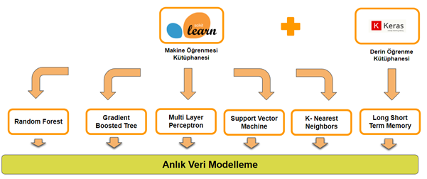
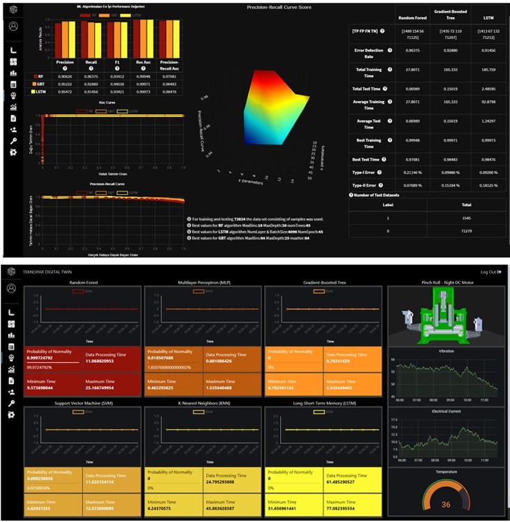

STEEL 4.0- TMLL provides and enables the application of machine learning algorithms and needed to perform smart predictive maintenance for the SWP machinery. TMLL utilizes supervised, unsupervised, multidimensional scaling and reinforcement learning algorithms as needed.
To compare ML models used for predictive analysis, GUIs have been developed.
Below listed algorithms have been used:
Figure: Algorithms used for machine learning
The developed sample screens are presented in the following Figures.
Figure: Selected Sample TMLL Displays